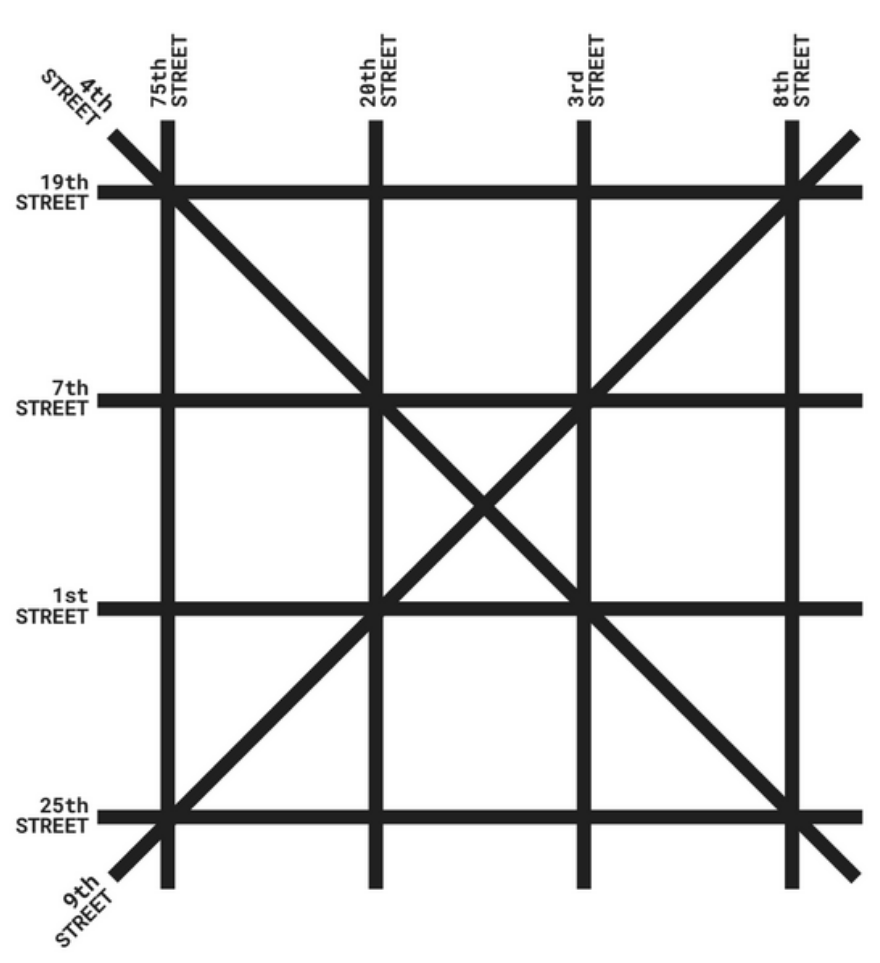

It seems to me that navigating around the city used to be easier.

One more (7)
Troops (4)
Saloons (4)
Chomps (5)
Collapse (9)
100 years (7)
Fine particles (4)
Vixen (3)
On drugs (4)
Woman (4)
Tardy (4)
Affection (4)
Mr. Davis (5)
Hour parts (7)
Country (6)
High-strung (7)
Elixir (6)
Periods (5)
Carry-out (2,2)
Up to (5)